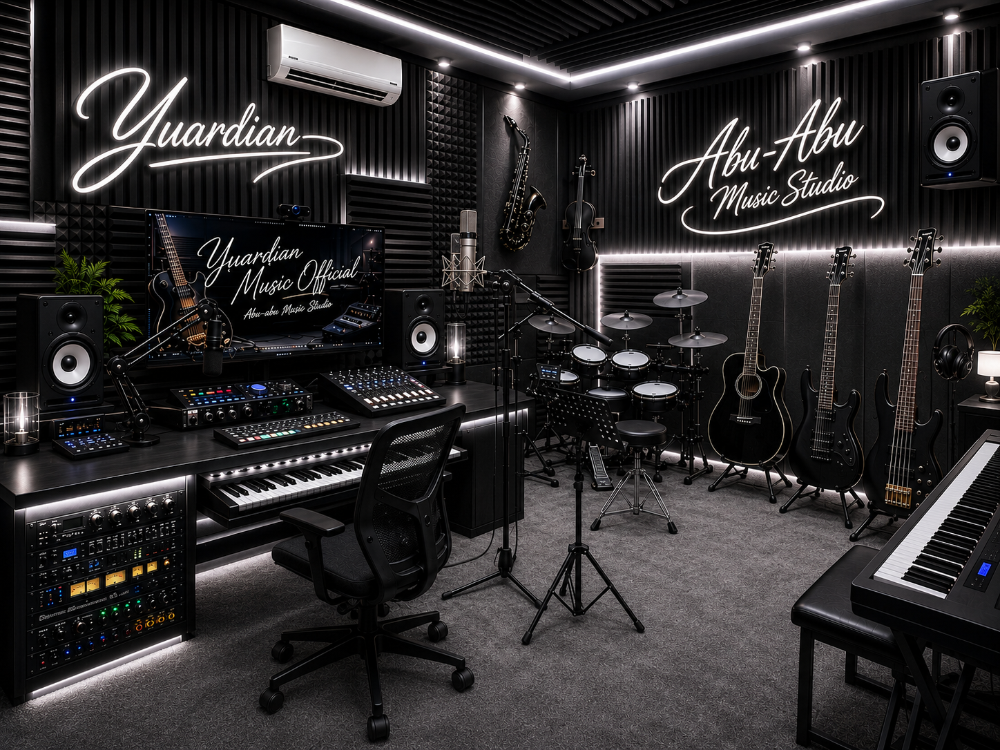

Yuardian membantu perusahaan, UMKM, hotel, restoran, startup, event organizer dan brand menciptakan identitas audio profesional yang mudah diingat.

Yuardian adalah studio Corporate Music Branding yang membantu bisnis membangun karakter dan emosi melalui musik.
WhatsApp : 081311422777
Telepon : 087785313888
Email : yuardian.music@gmail.com
Tangerang, Indonesia